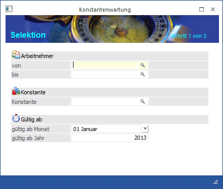
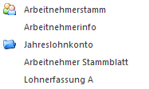
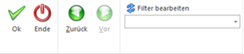
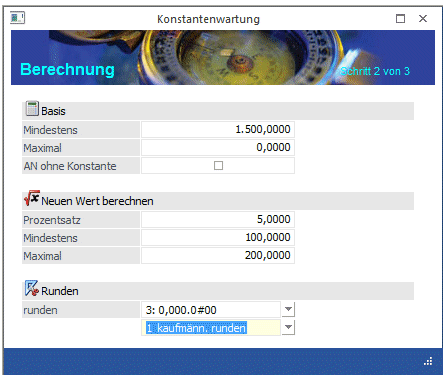
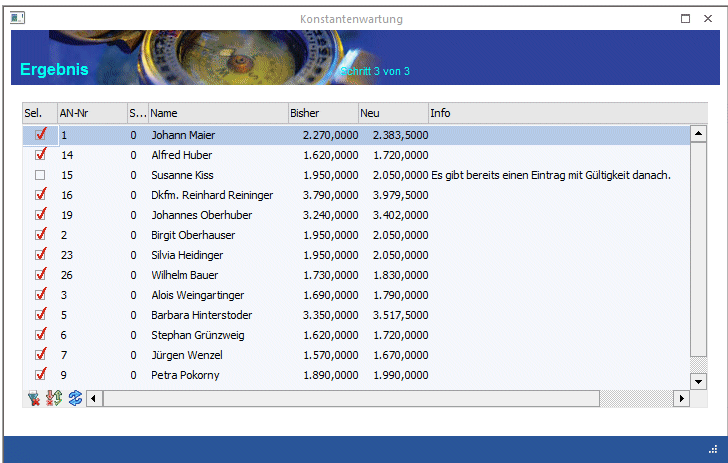
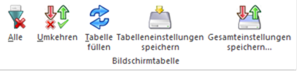

Über den Menüpunkt
1 Stammdaten
1 Arbeitnehmer
1 Konstantenwartung
können bestehende Konstanten gewartet oder neue Konstanten angelegt werden.
Die Konstantenwartung wird mit Hilfe eines Assistenten durchgeführt, der durch die einzelnen Schritte leitet. Bei der Konstantenwartung werden immer neue Einträge in der Konstantentabelle im AN-Stamm erzeugt, sodass immer nachvollzogen werden kann, wie sich die Konstanten mit der Zeit entwickelt haben.
Schritt 1
Im ersten Schritt können die Grundeinstellungen vorgenommen werden:

Ø Arbeitnehmer von - bis
Hier können die Arbeitnehmer eingeschränkt werden, für die eine Konstantenwartung durchgeführt werden soll. Wie die AN-Nummer eingegeben werden kann, dazu gibt es mehrere Möglichkeiten. Details dazu entnehmen Sie bitte dem Kapitel Aufruf einer AN-Nummer. Wenn in den beiden Feldern eine AN-Nummer eingetragen wird, dann wird daneben der Name des AN angezeigt. Durch einen Klick auf den AN wird standardmäßig der AN-Stamm aufgerufen. Über die rechte Maustaste kann aber individuell eingestellt werden, welche Aktion ausgelöst werden soll. Dabei stehen folgende Optionen zur Verfügung:

ü Arbeitnehmerstamm
Es wird der
AN-Stamm aufgerufen, wobei gleich der Datensatz des angezeigten AN angezeigt
wird.
ü Arbeitnehmerinfo
Es wird die
Arbeitnehmerinfo im Programm WinLine INFO geöffnet.
ü Jahreslohnkonto
Es wird das
Steuerfenster für das Jahreslohnkonto aufgerufen, wo der ausgewählte AN gleich
vorgeschlagen wird. Die Ausgabe muss nur mehr durchgeführt werden.
ü Arbeitnehmer Stammblatt
Es wird
das Steuerfenster für das Arbeitnehmer Stammblatt aufgerufen, wo der ausgewählte
AN gleich vorgeschlagen wird. Die Ausgabe muss nur mehr durchgeführt werden.
ü Lohnerfassung A
Es wird die
Einzelabrechnung aufgerufen, wobei gleich alle Daten des ausgewählten AN
abgerufen werden. Bei diesen Punkt ist darauf zu achten, dass ggf. die
automatischen Lohnarten abgearbeitet werden.
Die zuletzt getätigte Einstellung wird als Standard übernommen, d.h. wenn das nächste Mal nur auf den AN-Namen geklickt wird, dann wird die letzte Aktion automatisch durchgeführt. Diese Einstellung wird pro Benutzer gespeichert.
Wenn die Einschränkung von - bis nicht ausreichend ist, kann eine zusätzliche oder optionale Einschränkung über den Filter vorgenommen werden (z.B. Einschränkung nach Arbeiter oder Angestellt oder dergleichen).
Ø Konstante
In diesem Feld wird die Konstante eingetragen, für die eine Wartung bzw. eine Neuanlage durchgeführt werden soll. Durch Drücken der F9-Taste kann nach allen angelegten Konstanten gesucht werden.
Gültig ab
Ø Gültig ab Monat
Aus der Auswahllistbox kann das Monat gewählt werden, ab dem der neue Wert der Konstante gültig sein soll.
Ø Gültig ab Jahr
Hier muss das Jahr eingegeben werden, ab dem der neue Wert der Konstante gültig sein soll.
Die beiden Werte werden in der Konstanten-Tabelle im AN-Stamm für die Einträge "Monat von" und "Jahr von" verwendet.
Buttons

Ø OK
Durch Anklicken des OK-Buttons (ist erst in Schritt 3 möglich) werden die Konstanten gemäß der Anzeige in der Tabelle geändert. Dabei werden die bestehenden Gültigkeiten auf die neuen Gültigkeiten (minus 1 Monat) beschränkt, und es wird ein neuer Eintrag der Konstante mit der neuen Gültigkeit angelegt.
Ø Ende
Durch Drücken der ESC-Taste wird das Fenster geschlossen
Ø Zurück - Vor
Durch Anklicken des VOR-Buttons gelangt man in den nächsten Schritt.
Ø Filter
Durch Anklicken des Filter-Buttons kann eine erweiterte Selektion der AN vorgenommen werden, für die die Konstantenwartung durchgeführt werden soll.
Schritt 2
Im zweiten Schritt kann eingestellt werden, welche Bedingungen für die Umstellung bzw. Erstellung von Konstanten gelten sollen:

Basis
Ø Mindestens
In diesem Feld wird der Mindestbetrag eingegeben, der vorhanden sein muss, damit eine Wartung vorgenommen werden kann.
Ø Maximal
In diesem Feld wird der Maximalbetrag eingegeben, der vorhanden sein darf, damit eine Wartung durchgeführt werden kann.
Beispiel:
In der Konstante 1 wird der Grundbezug gespeichert, wobei der Grundbezug bei Arbeitern der Stundenlohn ist, und bei Angestellter der Monatsbezug. Wenn nun die Konstante 1 nur für die Angestellten geändert werden soll, so kann ein Mindestbetrag eingegeben werden, der über dem höchsten Stundenlohn liegt. Soll die Konstante 1 nur für die Arbeiter geändert werden, so kann der Maximalbetrag so eingestellt werden, dass er unter dem Mindestbezug der Angestellt liegt - damit können dann die jeweiligen AN "eingeschränkt" werden.
Ø AN ohne Konstante
Standardmäßig ist diese Option inaktiv. In dem Fall kann die ausgewählte Konstante nur für die AN gewartet werden, bei denen diese Konstante bereits hinterlegt ist. Wenn die Option aktiviert wird, kann die Wartung auch für AN durchgeführt werden, bei denen die Konstante noch nicht vorhanden ist (Neuanlage).
Neuen Wert berechnen
Ø Prozentsatz
Hier kann der Prozentsatz (mit bis zu 4 Nachkommastellen) eingegeben werden, um den die ausgewählte Konstante erhöht werden soll.
Ø Mindestens
In diesem Feld kann der Mindestbetrag eingegeben werden, um den die ausgewählte Konstante erhöht werden soll. Ist der mit dem Prozentsatz errechnete Wert geringer als der Mindestbetrag, dann wird der Mindestbetrag genommen.
Ø Maximal
In diesem Feld kann der Maximalbetrag eingegeben werden, um den die ausgewählte Konstante erhöht werden soll. Ist der mit dem Prozentsatz errechnete Wert höher als der Maximalbetrag, dann wird der Maximalbetrag genommen.
Beispiel:
Die Konstante 1 soll um 2,3 %, mindestens aber um 40,- erhöht werden.
Im Ausgangswert ist der Wert 1.500,- eingetragen. 2,3 % davon würden 34,5 betragen. Da der Mindestbetrag bei 40,- liegt, würde die Konstante nun auf 1.540,- erhöht werden.
Die Konstante 1 soll um 2,3 %, maximal aber um 50,- erhöht werden.
Im Ausgangswert ist der Wert 3.000,- eingetragen. 2,3 % davon würden 69,- betragen. Da der Höchstbetrag bei 50,- liegt, würde die Konstante nun auf 3.050,- erhöht werden.
Runden
Ø runden
Aus der Auswahllistbox kann gewählt werden, auf welche Stelle das Ergebnis der Berechnung gerundet werden soll. Folgende Möglichkeiten stehen zur Verfügung:
ü 1: 0,000.000#
ü 2: 0,000.00#0
ü 3: 0,000.0#00
ü 4: 0,000.#000
ü 5: 0,00#.0000
ü 6: 0,0#0.0000
ü 7: 0,#00.0000
ü 8: #,000.0000
Das #-Zeichen gibt immer die Stelle an, auf die gerundet werden soll.
Ø Rundungsregel
In der zweiten Auswahllistbox kann entschieden werden, wie die Rundung erfolgen soll. Dabei gibt es die Option "kaufmännisch runden", "immer aufrunden" und "immer abrunden".
Schritt 3
Im dritten Schritt wird das vorläufige Ergebnis der Wartung angezeigt und kann ggf. noch editiert werden. Hier erfolgt dann auch die Speicherung der Konstanten.

Hinweis:
Inaktive AN werden hier nicht angezeigt und können auch nicht bearbeitet werden.
Folgende Felder sind ersichtlich bzw. können auch noch bearbeitet werden:
Ø Sel.
Mit dieser Checkbox wird bestimmt, ob die entsprechende Konstante verändert werden soll oder nicht. Ist die Checkbox aktiv, wird die Konstante auf den in der Spalte "Neu" angeführten Wert geändert. Ist die Checkbox inaktiv, bleibt die Konstante unverändert.
Ø AN-Nr.
Ø Sub
Ø Name
In diesen 3 Feldern werden die Informationen zum Arbeitnehmer angezeigt.
Ø Bisher
In dieser Spalte wird der Wert der Konstante angezeigt, wie er zum ausgewählten Gültigkeitstermin (Einstellung erste Seite im Assistenten) wirksam ist.
Ø Neu
In dieser Spalte wird der durch die Konstantenwartung errechnete neue Wert ausgewiesen, wobei hier allfällige Runden etc. bereits berücksichtigt sind.
Ø Info
In dieser Spalte kann eine Information angezeigt werden, die dazu führt, dass für den AN nicht automatisch eine Konstantenwartung durchgeführt wird. Durch einen Doppelklick auf die Spalte kann auch der AN-Stamm geöffnet werden. Diese Meldung kann sein:
ü Es gibt bereits einen Eintrag mit
Gültigkeit danach
In diesem Fall ist beim AN bereits die Konstante mit der im
ersten Schritt eingetragenen Gültigkeit vorhanden.
ü Konstante beim Arbeitnehmer noch
nicht hinterlegt
In diesem Fall ist beim AN die Konstante noch nicht
angelegt, kann aber im Zuge der Konstantenwartung angelegt werden.
Logik der Konstantenwartung
Wie ermittelt das Programm den Wert, der als Basis für die Konstantenwartung herangezogen werden soll?
Im ersten Schritt des Assistenten wird angegeben, mit welcher "Gültigkeit ab" die neue Konstante angelegt werden soll. Mit dieser Einstellung wird nun im AN-Stamm geprüft, welcher Wert ermittelt würde.
Beispiel 1:
Im AN-Stamm ist die Konstante 1 mit der Gültigkeit von 01/2006 bis 12/0 und dem Wert von 2.000,- angelegt (keine zeitliche Beschränkung).
Wird nun eine Konstantenwartung mit Gültigkeit ab 01/2007 durchgeführt, wird als Basiswert 2.000,- gefunden.
Beispiel 2:
Im AN-Stamm ist die Konstante 1 mit der Gültigkeit von 01/2006 bis 12/2006 und dem Wert von 2.000,- angelegt (keine zeitliche Beschränkung), danach gibt es keine "Zuordnung" mehr.
Wird nun eine Konstantenwartung mit Gültigkeit ab 01/2007 durchgeführt, wird als Basiswert 0,- vorgeschlagen, weil zum ausgewählten Gültigkeitsbereich keine Konstante ermittelt werden kann.
Buttons in der Tabelle

Ø Alle
Mit diesem Button werden alle Datensätze in der Tabelle markiert.
Ø Umkehren
Durch Anklicken des Umkehr-Buttons kann die Selektion in das Gegenteil gekehrt werden.
Ø Tabelle füllen
Durch Anklicken des Buttons kann die Tabelle neu gefüllt werden (wenn z.B. zwischenzeitlich Daten im AN-Stamm geändert wurden).
Ø Tabelleneinstellungen speichern
Die Spalten einer Tabelle können grundsätzlich an beliebige Positionen verschoben, bzw. in der Breite entsprechend angepasst werden. Durch Anwahl des Buttons "Tabelleneinstellungen speichern" werden die Einstellungen benutzerspezifisch gespeichert und bei dem nächsten Aufruf des Programmpunktes wieder vorgeschlagen.
Ø Gesamteinstellungen speichern
Im Gegensatz zu "Tabelleneinstellungen speichern" können mit "Gesamteinstellungen speichern" mehrere Tabellenaufbauten gespeichert und nach Wunsch geladen werden. Zusätzlich werden Sonderfunktionen der Tabelle (z.B. "Spalte gruppieren") ebenfalls bei der Speicherung bedacht.
Buttons
Ø OK
Durch Anklicken des OK-Buttons werden die Konstanten gemäß der Anzeige in der Tabelle geändert. Dabei werden die bestehenden Gültigkeiten auf die neuen Gültigkeiten (minus 1 Monat) beschränkt, und es wird ein neuer Eintrag der Konstante mit der neuen Gültigkeit angelegt.
Beispiel:
Im AN-Stamm ist die Konstante 1 mit der Gültigkeit von 01/2006 bis 12/0 und dem Wert von 2.000,- angelegt (keine zeitliche Beschränkung).
Wird nun eine Konstantenwartung der Konstante 1 mit 10 % und mit Gültigkeit ab 01/2007 durchgeführt.
Der bestehende Eintrag mit dem Wert von 2.000,- wird auf 12/2006 beschränkt. Dazu wird ein neuer Eintrag mit dem Wert 2.200,- erzeugt, dessen Gültigkeit von 01/2007 bis 12/0 gesetzt wird.
Ø Zurück
Durch Anklicken des Zurück-Buttons können die Basiseinstellungen nochmals verändert werden.
Ø ENDE
Durch Drücken der ESC-Taste wird das Fenster geschlossen.
Ø Filter-Button
Durch Anklicken des Filter-Buttons kann eine erweiterte Selektion der AN vorgenommen werden, für die die Konstantenwartung durchgeführt werden soll.